毎月10名様限定の募集です
📱 LINE登録で無料相談受付中※ 受付期間：20XX年X月X日まで
LINE登録・初回相談・特典ダウンロードはすべて無料です。金銭的リスクなく、まずは試してみることができます。
一人で悩まず、専任のサポーターがあなたのペースに合わせてアドバイス。「何から始めればいいかわからない」を解消します。
座学だけではなく、実際にSNSを運用しながら学ぶ実践型。インスタグラムを中心に、コンテンツ作成から収益化まで学べます。

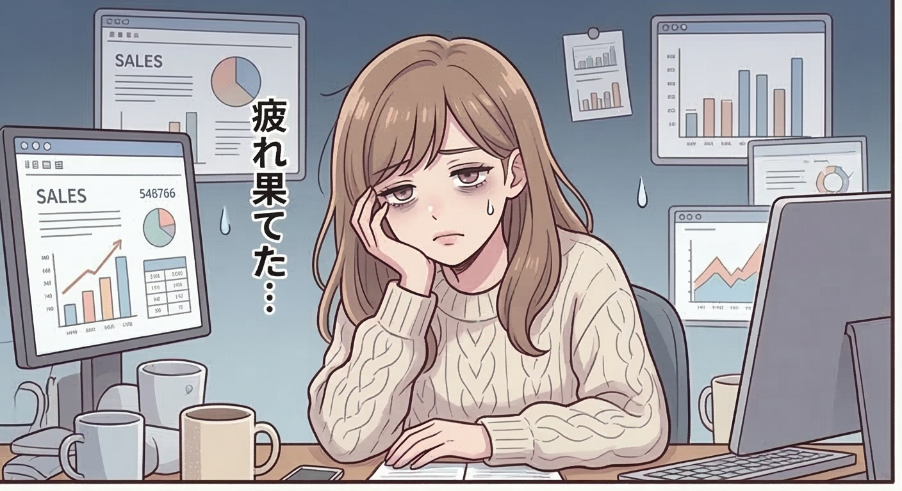
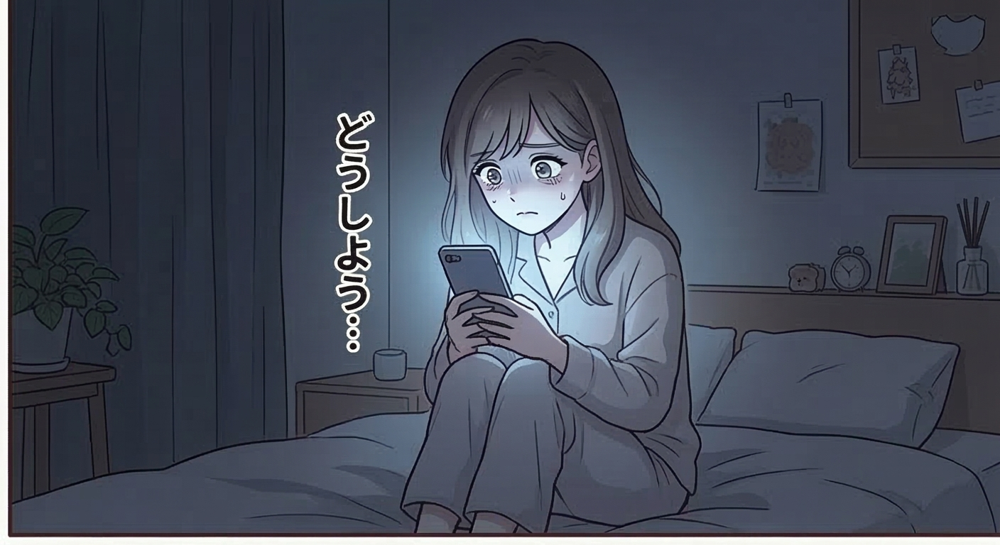
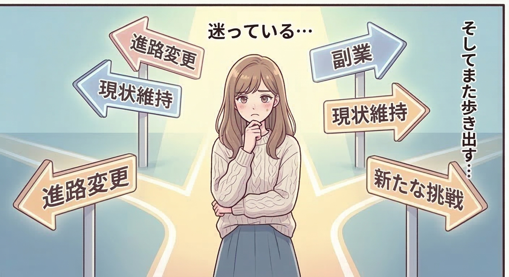
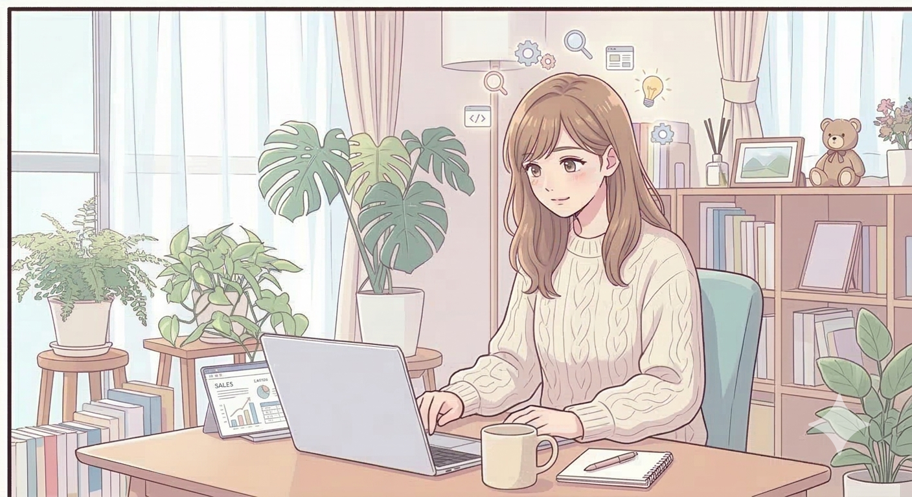
あなたも同じ悩みを抱えていませんか？
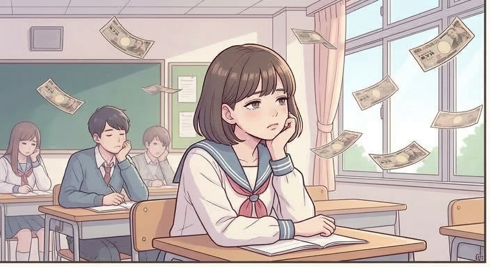
高額スクールに入ったのに、結局何も変わらなかった
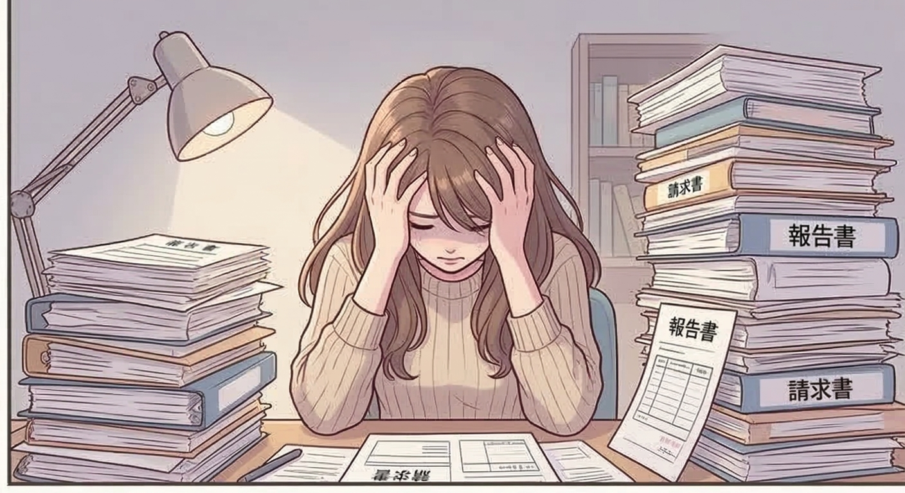
情報商材を買ったけど、実践できずに終わった
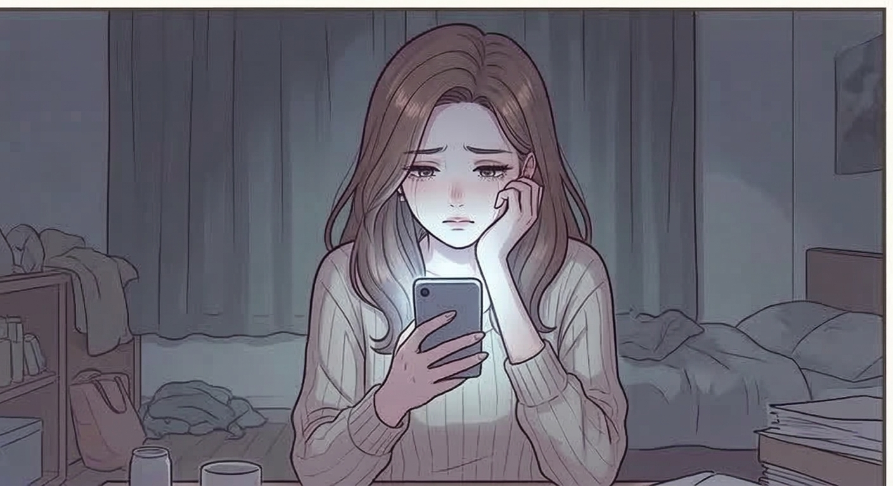
独学でSNSを始めたけど、フォロワーが全く増えなかった
LINE登録・相談・特典がすべて無料。まずはお試しで、あなたに合った副業スタイルを見つけましょう。
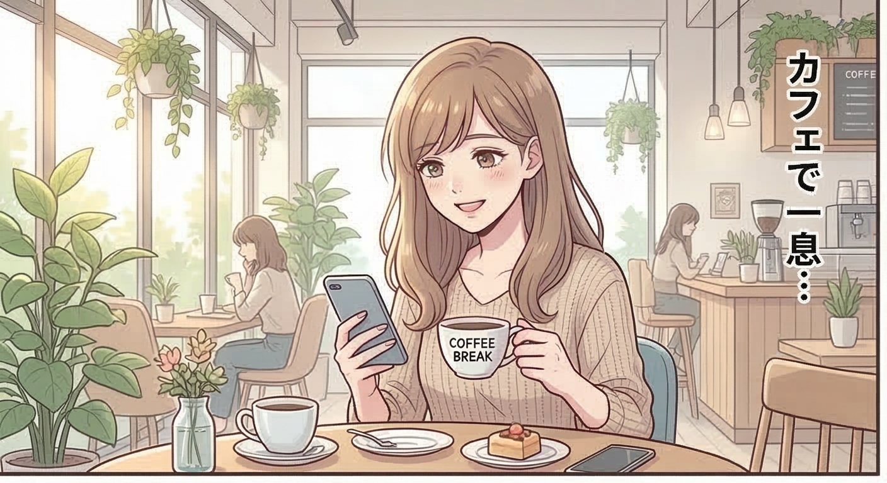
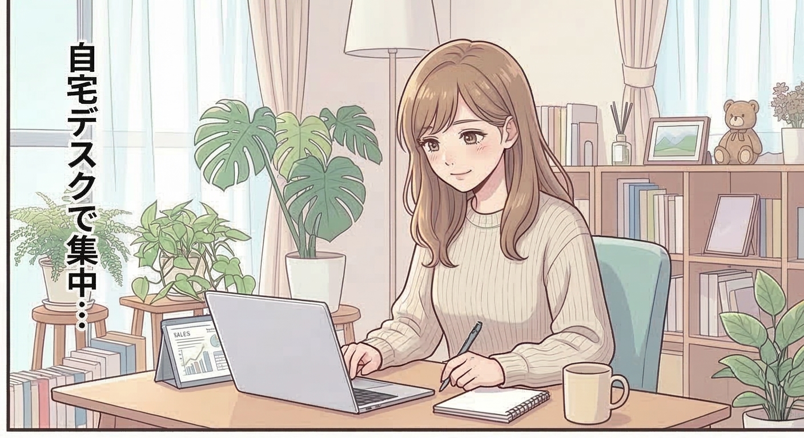
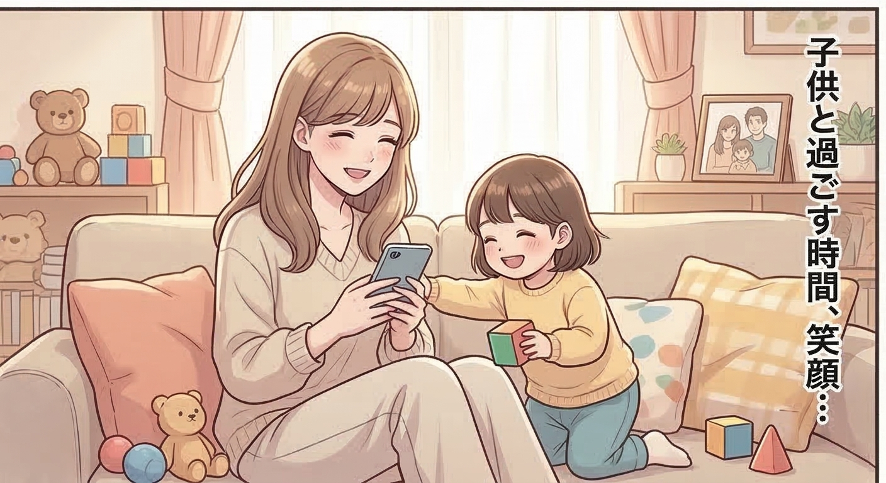
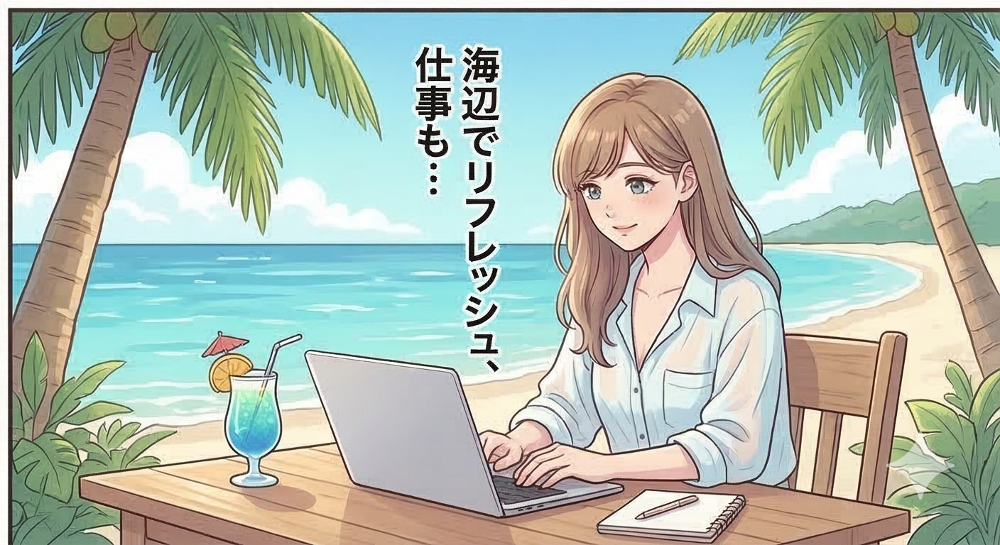
まずはあなたに合った副業スタイルを無料で見つけましょう。
プロフィール作成・コンセプト設計をサポーターと一緒に行います。
投稿の作り方・ハッシュタグ戦略・リール動画のコツを学びます。
アフィリエイト・PR案件・自社商品販売など、収益化の方法を学びます。
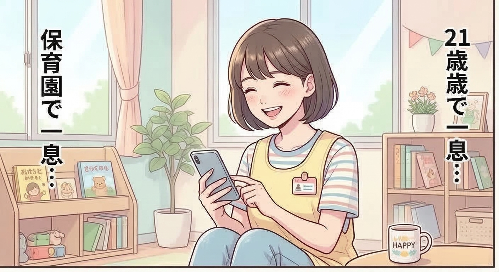
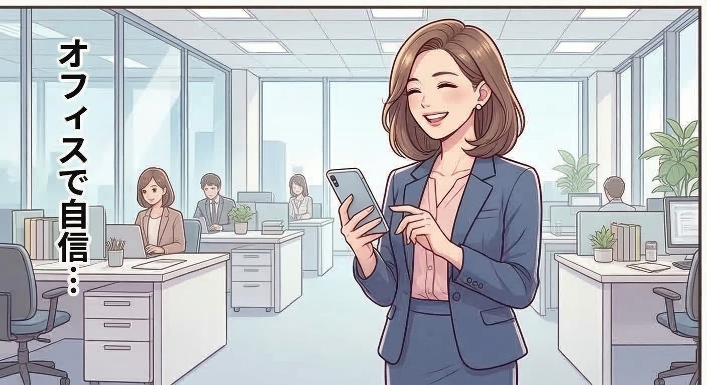
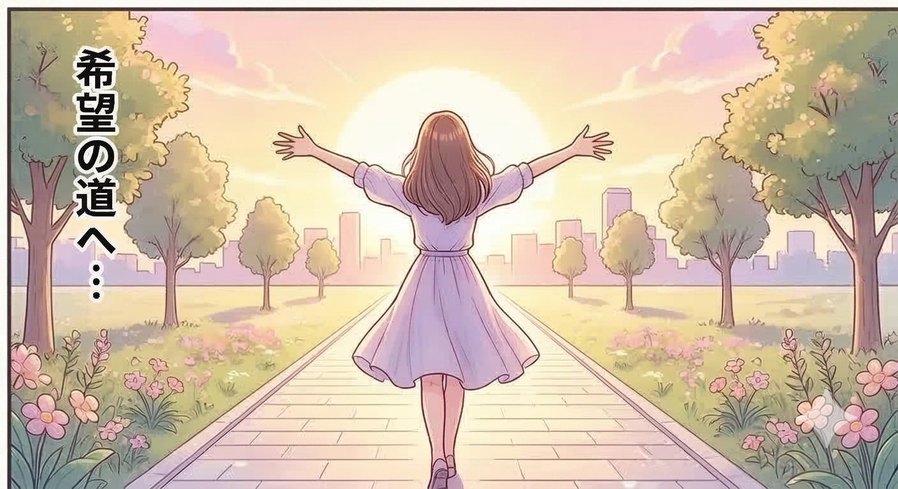
副業に興味はあるけど、高額なスクールや情報商材に手を出すのは不安。
そんなあなたの気持ちはよくわかります。
でも待ってください。
お金をかけずに、正しい方法で副業を始められるチャンスがあるとしたら？
あなたもリスク0円で副業を始めよう。
毎月10名様限定の募集です
📱 LINE登録で無料相談受付中※ 受付期間：20XX年X月X日まで
※ 受付期間：20XX年X月X日まで・いつでもブロックOK